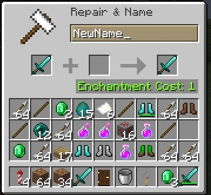
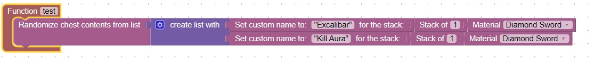
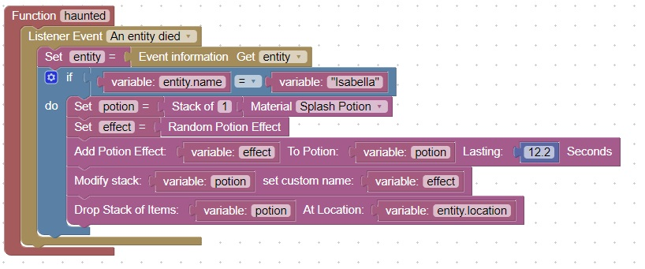

Methods for dropping/creating custom items
This topic will discuss various methods for players to obtain a custom item:
- Dropped at player's location when a player pushes a specific button
- Use an Anvil to give an item a custom name
- From a chest
- From a recipe
- Dropped by a boss monster when killed
- Dropped when a player moves over a specific [x,y,z] location
Drop on item on button push
Add an oak button to your world, and then use F3 to get the location of the button.
Use this information to populate the X,Y,Z location in the if statement:
Note: You do not need to check that an oak button was the type of block clicked on. In this regard you can also use a sign
You also might want to have some kind of sign to indicate what the button will give you
You could also have a cost for the item, and check how many gold, emerald or diamonds are in their hotbar

Use an anvil
Using an anvil you can give any item a custom name

From a chest
You can use this code to randomize chest contents when your test procedure is run

Create a custom item from a recipe
You can have a user craft the special item using a custom recipe:

Drop the item when a boss monster is killed
This code will drop a splash potion when a boss monster with custom name "Isabella" is killed.

Drop the item when the player moves over a specific [x,y,z] location
You can use F3 to see the location of blocks around your world. Doorways work well to get locations that players must move through